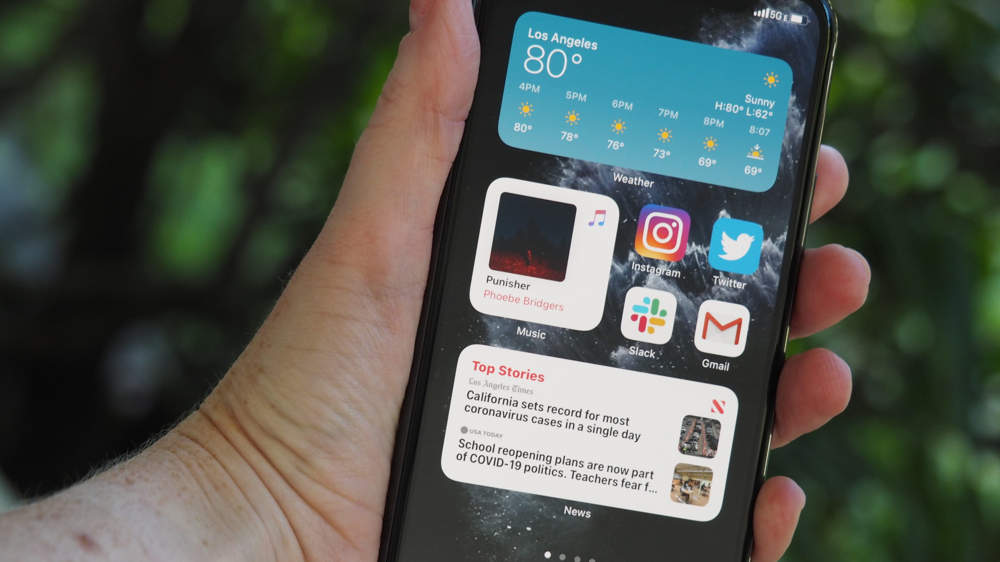
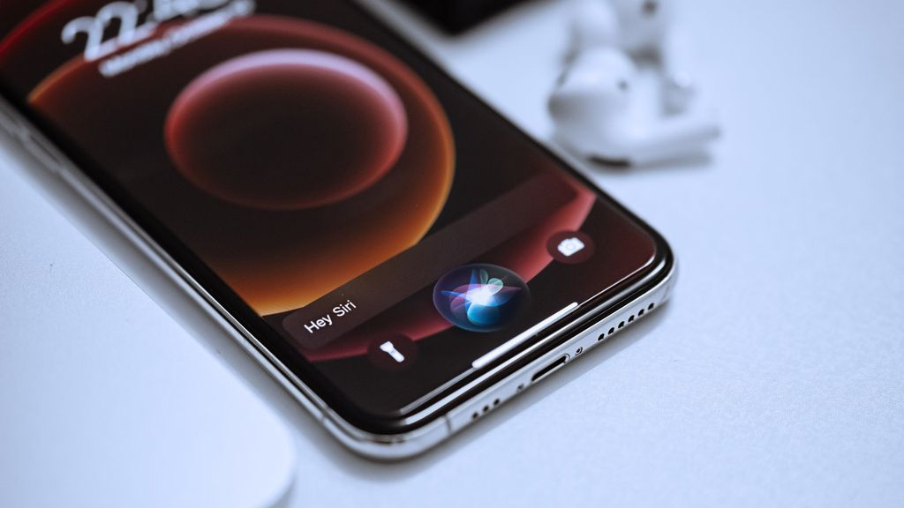

A História do iOS
O que é IOS?
IOS (antes chamado de iPhone OS) é um sistema operacional móvel da Apple Inc.🔗 desenvolvido originalmente para o iPhone, iPod Touch e o iPad até a introdução do iPadOS em 2019, um sistema derivado do iOS.
História
O sistema operacional foi apresentado com o iPhone na Macworld Conference & Expo🔗 em 9 de janeiro de 2007, e lançado no mês de junho. Inicialmente, as aplicações de terceiros não eram permitidas. Steve Jobs🔗 argumentou que os desenvolvedores poderiam criar aplicativos na web que "se comportam como aplicações nativas no iPhone". Em 17 de outubro de 2007, a Apple anunciou que a SDK nativa estava em desenvolvimento e que eles esperassem para colocá-la nas "mãos dos desenvolvedores".
Em 6 de março de 2008, a Apple lançou o primeiro beta, juntamente com um novo nome para o sistema operacional: o "iPhone OS". A rápida venda de dispositivos móveis da Apple acendeu interesse no SDK. A Apple também vendeu mais de um milhão de iPhones durante uma temporada de feriados de 2007. Em 27 de janeiro de 2010, a Apple anunciou o iPad, com uma tela bem maior do que o iPhone e iPod touch, e projetado para navegar na web, consumo de mídia, e da leitura de iBooks. O nome "iOS" foi usado pela Cisco Systems🔗. Para evitar qualquer ação judicial em potencial, a Apple licenciou o "iOS" uma marca registrada da Cisco.
Siri
A Siri é um dos diferenciais do sistema operacional desenvolvido pela Apple. A assistente pessoal inteligente que funciona como um aplicativo nos dispositivos suportados. O serviço, dirigido por comandos de voz do usuário, pode fazer uma variedade de diferentes tarefas, como ligações ou envio de mensagens de texto para alguém, abrir um aplicativo, pesquisar na web, encontrar locais ou direções, e responder à questões de conhecimentos gerais. Siri foi atualizado no iOS 7 com uma nova interface, respostas mais rápidas, suporte para o Wikipedia, Twitter e Bing, além de uma alteração na voz para parecer mais humano. Siri está disponível apenas na iPhone 4S ou posterior, a quinta geração do iPod Touch, o iPad Mini e o iPad (3ª geração) e posteriores.
Versões
Assim como o Android, que até sua décima versão usava nomes de doces como codinomes públicos, o iOS também é conhecido entre seus criadores e desenvolvedores por nomes fictícios que antecedem o número final da versão. Aqui estão os 'apelidos' que o sistema ganhou durante sua fase de testes:
- 1.0 Alpine
- 2.0 Big Bear
- 3.0 Kirkwood
- 4.0 Apex
- 5.0 Telluride
- 6.0 Sundance
- 7.0 Innsbruck
- 8.0 Okemo
- 9.0 Monarch
- 10.0 Whitetail
- 11.0 Tigris
- 12.0 Peace
- 13.0 Yukon
- 14.0 Azul